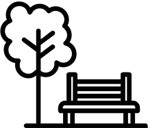
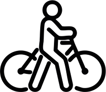
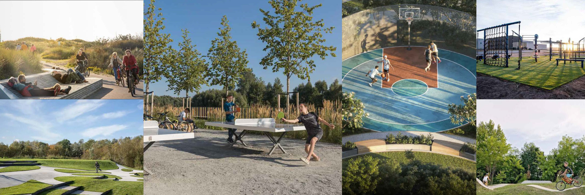
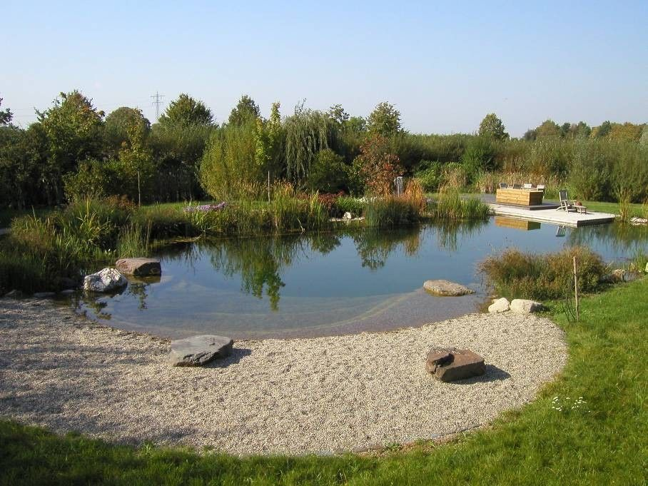
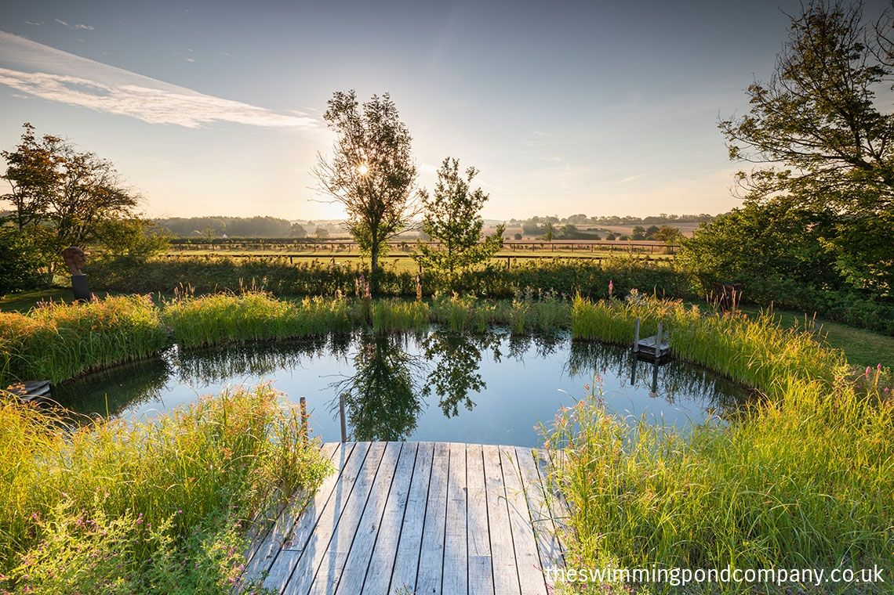
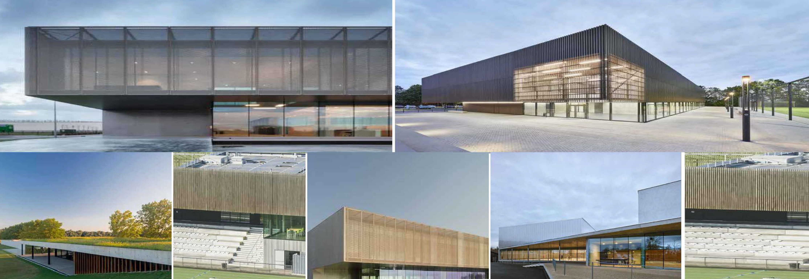
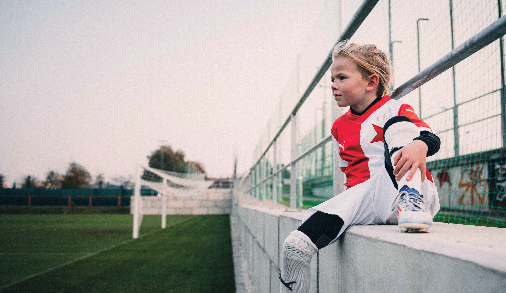

VÁŽENÍ OBYVATELÉ ŠEBEROVA,
dovolte, abychom vám představili koncept sportovně-tréninkového centra Šeberov.
Výstavba nového sportovně-vzdělávacího komplexu SK Slavia Praha na území vaší městské části by přinesl Šeberovu a jeho okolí řadu konkrétních výhod pro zlepšení každodenního života. Moderní areál by sloužil pro výchovu talentované mládeže a zároveň nabídl paletu možností pro rozvoj sportu, volného času, kultury i komunitního života v Šeberově.
Každý nový projekt přináší pro současný stav místa řadu otázek. Centrum je připravováno v souladu s nejvyššími standardy moderní výstavby. Při její přípravě je kladen důraz na udržitelnost, šetrné začlenění do okolní krajiny a zachování maximálního množství zeleně. V plánu výstavby jsou také vodní prvky, nové stromořadí, relaxační zóny a přímé napojení na cyklostezky a pěší trasy. V rámci projektu plánujeme realizovat mimo jiné kavárnu a veřejné prostory, které nabídnou příjemné místo k setkávání.
Pár vět nedokáže popsat, co vše projekt symbolizuje a přináší, a právě proto vám chceme tímto způsobem zcela otevřeně, přehledně
a srozumitelně představit, co vše se pod názvem sportovně-tréninkové centrum skrývá. Ať už jde o přímou podporu místních škol, dětského sportu, nové volnočasové aktivity nebo konkrétní přímé i nepřímé finanční přínosy pro městskou část.


K čemu by sloužilo SPORTOVNÉ-TRÉNINKOVÉ CENTRUM?
Sportovně-tréninkové centrum SK Slavia Praha by byl moderní areál určený pro každodenní sportovní přípravu mládeže a profesionálních týmů klubu. Jeho hlavním posláním bude vytvořit bezpečné, kvalitní a inspirativní prostředí pro růst mladých talentů – dívek i chlapců – v duchu hodnot fair play, týmové práce a zdravého životního stylu.
Kdo by SPORTOVNÍ ČÁST AREÁLU využíval?
Mládežnické týmy – deset chlapeckých a pět dívčích týmů, od nejmenších věkových kategorií až po dorost. Hlavní náplní centra je právě rozvoj těchto mladých sportovců.
Dospělé týmy – dva mužské a jeden ženský tým, které budou areál využívat výhradně k tréninku (nikoliv k utkáním).
Při realizaci podobných záměrů i jinde v Evropě se ukazuje, že přítomnost profesionálních týmů a tedy přítomnost vzorů má jen pozitivní efekty pro výchovu talentovaných hráčů.
KOLIK TÝMŮ A HŘIŠŤ BY BYLO V PROVOZU?
Celkový počet plánovaných tréninkových ploch je 11, z nichž v jednu chvíli by standardně nebyla využita více než 4 hřiště. Zbylá plocha slouží k regeneraci, údržbě nebo by sloužila k volnočasovým účelům pro veřejnost. Areál by byl pro trénink družstev otevřen od 9:00 do 19:00, bez večerního provozu a bez světelného smogu. Večerní klid zůstane v lokalitě zachován.
PROJEKT, KTERÝ BUDE SLOUŽIT VŠEM OBYVATELŮM ŠEBEROVA
Přidaná hodnota pro každého obyvatele městské části Praha – Šeberov. Takový může být areál sportovně-tréninkového centra, který by se stal živým centrem sportu, odpočinku i komunitního života. Jeho součástí by byl mimo jiné nový volnočasový park o rozloze přibližně 40 000 m², jehož podoba bude utvářena podle potřeb a přání obyvatel.
Areál by vybudovala SK Slavia Praha na základě požadavků MČ Praha – Šeberov a ve spolupráci s jejími zástupci. V prostoru vznikne také veřejná kavárna a restaurace – místo pro přirozená setkávání rodin, seniorů i mladších obyvatel. Tyto veřejné prostory budou koncipovány podle současných trendů udržitelné výstavby: s důrazem na zeleň, vodní prvky, stínění, odpočinkové zóny a příjemné architektonické řešení.
Díky projektu by rovněž došlo ke zlepšení pěší a cyklistické infrastruktury. Chodci i cyklisté se budou moci bezpečněji a plynuleji pohybovat napříč územím – i mimo areál samotný. Areál bude přirozeně průchozí, bez bariér, otevřený a přístupný veřejnosti. SK
Slavia Praha by zároveň podporovala a aktivně se podílet na organizaci místních komunitních událostí – jako jsou dětské dny, vánoční besídky, velikonoční akce a další společenské příležitosti. Tímto způsobem chce Slavia dlouhodobě přispívat k posílení komunitního života v oblasti.

Nový volnočasový park o rozloze
40 000 m2
v areálu sportovnětréninkového centra
Kvalitní veřejný prostor pro relaxaci a volný čas

Lepší a bezpečnější obecní infrastruktura pro pěší i cyklisty

VEŘEJNÁ ODPOČINKOVÁ ZÓNA PRO OBYVATELE ŠEBEROVA O ROZLOZE 40 000 m2



MOODBOARD BUDOVY AKADEMIE S MAXIMÁLNÍ ROZLOHOU 3 500 m2

PROJEKT, KTERÝ POSILUJE VZDĚLÁVÁNÍ
Moderní tréninkové centrum v Šeberově by nesloužilo pouze k výchově a rozvoji fotbalových talentů, ale stalo se zároveň silným partnerem městské části Praha – Šeberov v oblasti vzdělávání. Sportovní areál by byl zpřístupněn žákům místní základní školy pro výuku tělesné výchovy.
Vzniklo by tak kvalitní a inspirativní prostředí, které by dětem nabídlo skvělé podmínky pro sportovní činnosti. Spolupráce mezi základní školou, gymnáziem a sportovně tréninkovým-centrem by byla naprosto unikátní příležitost a zároveň výrazná konkurenční výhoda pro všechny děti ze Šeberova.
AREÁL BY SLOUŽIL ŽÁKŮM MÍSTNÍ ZÁKLADNÍ ŠKOLY PRO VÝUKU TĚLESNÉ VÝCHOVY
Intenzivní podpora vzdělávání s důrazem na pohyb a zdravý životní styl

PROFESIONÁLNÍ ZÁZEMÍ, ALE ŽÁDNÝ STADION
V Šeberově by se nehrály žádné soutěžní zápasy profesionálních týmů. Ty by i nadále probíhaly v Edenu nebo na venkovních hřištích soupeřů. Areál není stadion – je to tréninková základna, která má sloužit především přípravě.
KDO BY SE O DĚTI A SPORTOVCE STARAL?
-
Na místě by pracoval tým zkušených profesionálů:
- Trenéři
- Fyzioterapeuti
- Sportovní lékaři
- Kondiční specialisté
Celkově se předpokládá, že v tréninkovém centru by se rozvíjelo a trénovalo přibližně 320 dětí a 70 profesionálních hráček a hráčů. Tréninky by probíhaly v postupně rozvržených blocích tak, aby nikdy nebyly všechny děti přítomné zároveň. Mládežnické týmy navíc netrénují každý den – většina z nich má tréninkový režim 3-4krát týdně.


Každé dítě by mělo mít možnost sportovat a objevovat svůj talent. I když se z něj třeba nestane vrcholový sportovec, může si díky pohybu v kolektivu vypěstovat lásku ke sportu a zdravému životnímu stylu. Tu pak může předávat dál – jako rodič, učitel nebo třeba trenér.
Součástí našeho závazku vůči MČ Praha – Šeberov je založení a provozování fotbalového klubu pro místní mládež, odděleného od mládeže SK Slavia.
Centrum nebude uzavřeným prostorem, ale otevřeným a přátelským místem, kde se děti z okolí budou moci aktivně zapojit, rozvíjet své schopnosti a nacházet nové přátele.
Stejně tak jsme připraveni podpořit i další sporty a volnočasové aktivity, aby byl Šeberov místem, které žije nejen na fotbalovém hřišti, ale i mimo něj. Jsme připraveni být partnery Šeberova a všech jeho obyvatel.
VEŘEJNÉ ZÁVAZKY INVESTORA
Náš projekt žádným způsobem nepoškodí ani neohrozí unikátní Hrnčířské louky. V případě, že by průzkumy, které jsme zadali, prokázaly, že by projekt nebylo možné realizovat bez poškození této přírodní památky, nebudeme ho realizovat.
Provoz tréninkového centra bude probíhat mezi 9:00 a 19:00, přičemž v jeden okamžik standardně nebudou využita více než čtyři hřiště. Abychom nepřispívali ke zvýšení dopravní zátěže v době dopravní špičky, přizveme ke spolupráci specializovanou dopravně-inženýrskou firmu, která nám pomůže s optimalizací provozu.
SK Slavia Praha bude provozovat pravidelnou kyvadlovou linku mezi Edenem a Šeberovem, která bude sloužit jako pohodlný a ekologický způsob dopravy pro děti docházející na tréninky. Budeme zároveň děti i rodiče motivovat k tomu, aby tuto dopravu co nejvíce využívali a minimalizovali tak individuální dopravu do areálu. Kapacita parkovacích míst v návrhu je nastavena nad požadavky příslušných právních předpisů, je záměrně naddimenzována – naše tréninkové centrum takovou kapacitu rozhodně nevyužije. Jsme totiž připraveni tato místa bezplatně poskytnout MČ Šeberov, například pro případy akcí konaných v areálu škol, na než tamní současná kapacita nemusí stačit. Parkovací kapacita byla vytvořena na základě požadavků zastupitelů MČ Praha – Šeberov. Pokud se ukáže, že město tato místa nevyužije, jsme připraveni jejich počet snížit.
Jeho podoba bude utvářena ve spolupráci s MČ Praha - Šeberov
Tréninkové centrum bude v 85 % své kapacity sloužit pro výchovu mladých děvčat a chlapců. Zavazujeme se, že žádné soutěžní zápasy dospělých kategorií nebudou v Šeberově pořádány. Organizovat nebudeme ani jiné akce, u kterých by se očekával velký počet diváků. Provoz bude šetrný k místnímu prostředí a životu v obci
Naším cílem je partnerské soužití s obcí a chceme MČ Praha – Šeberov přinášet skutečnou přidanou hodnotu. Zavazujeme se, že provoz tréninkového centra nebude vyžadovat žádné finanční prostředky — ani na výstavbu, ani na provoz. Projekt tedy nikdy nezatíží rozpočet MČ Praha – Šeberov.

Sportovně-tréninkové centrum Šeberov
I díky vám může vzniknout unikátní komunální projekt, který bude svým významem, přesahem a funkčností sloužit jako vzor nejen u nás, ale po celé Evropě.
Benefity pro obyvatele ŠEBEROVA
-
01Založení a provozování mládežnického týmu Šeberov-
-
02Společné komunitní akce a projekty
-
03Nový volnočasový park o rozloze 40 000 m2
Jeho podoba bude utvářena ve spolupráci s MČ Praha - Šeberov
-
04Nová kavárna / restaurace v prostoru
-
05Lepší a bezpečnější obecní infrastruktura pro pěší i cyklisty
-
06Kultivace ochranného pásma pod VVN
FAQ
Co přesně je projekt STC Šeberov?
Moderní sportovně-tréninkové centrum se silným komunitním přesahem: sport, vzdělávání a volný čas pro děti i obyvatele Šeberova. Součástí je i veřejný volnočasový park. Projekt připravuje SK Slavia Praha ve spolupráci s MČ Praha-Šeberov.
Jak se projekt vyvíjel?
Projekt běží od roku 2022 (Memorandum s MČ). V roce 2024 se změnil vlastník Slavie; proto došlo k navýšení přínosů (mj. více hřišť, volnočasový park, důraz na vzdělávání). Na doporučení MČ byl vybrán nový architekt, který má s lokalitou zkušenost.
Jaký je současný stav projektu?
V současnosti probíhá:
- Hydrogeologický průzkum předmětných pozemků
- Biologický průzkum krajiny – detailní analýza fauny a flóry na dotčeném území.
- Zadáno zpracování oznámení EIA
- Dopravní studie – odborný posudek dopravních inženýrů, kteří prověří případné dopady na dopravu v okolí centra. Slavia v té souvislosti navrhuje zřízení kyvadlové dopravy mezi Edenem, Opatovem a Šeberovem a také řešení parkovacích kapacit
Kde bude areál a jak je velký?
Na území o cca 213 000 m²; z toho sportovní část zhruba 140 000 m² a samostatný veřejný park ~40 000 m². Dalších ~30 000 m² tvoří ochranné pásmo VVN, které se má kultivovat zelení.
Kolik hřišť je plánováno a pro koho?
Celkem 11 hřišť (navýšení z původních 8). 85 % kapacity je určeno pro výchovu dívek a chlapců. Soutěžní zápasy dospělých se v Šeberově pořádat nebudou, ani akce s masovou návštěvností.
Bude areál “uzavřený”, nebo přístupný veřejnosti?
Areál má být otevřený, průchozí a bez bariér, přirozeně zasazený do krajiny. Zřídí se veřejná kavárna/restaurace; centrum má podporovat komunitní akce.
Jaký dopad to má na přírodu – zejména Hrnčířské louky?
Investor se zavazuje nepoškodit přírodní památku Hrnčířské louky. Pokud by odborné průzkumy prokázaly opak, projekt nebude realizován.
Provozní režim a hluk/doprava?
Provoz tréninkového centra 9:00–19:00, v jeden okamžik obsazena max. 4 hřiště. Pomůže dopravně-inženýrské řešení a kyvadlová linka Eden–Šeberov motivující děti/rodiče k hromadné dopravě. Parkovacích míst je v návrhu víc, než vyžadují předpisy, ale klub je ochoten počet snížit; zároveň je bezplatně nabídne MČ pro akce škol
Jak projekt pomůže obci finančně a komunitně?
Slavia uhradí výstavbu i provoz; rozpočet MČ tím nebude zatížen. Navíc 50 % stavebního platu půjde přímo do rozpočtu MČ Šeberov. Přibude veřejný park ~40 000 m², zlepšená pěší a cykloinfrastruktura, komunitní akce a odborné garance pro plánované gymnázium.
Jsou dostupné finální vizualizace?
Fotografie na webu jsou moodboard/inspirace, nikoli finální vizualizace projektu.
Co přesně z toho mají místní děti a školy?
Areál slouží ZŠ pro výuku TV , Slavia se stane garantem sportovní výuky v plánovaném gymnáziu a založí místní mládežnický tým Šeberov oddělený od mládeže SKS.
Jaké další benefity jsou deklarované?
Komunitní akce, nová kavárna/restaurace, kultivace pásma VVN, lepší bezpečnost pro pěší/cyklisty; park i areál se navrhují ve spolupráci s MČ a podle přání obyvatel.